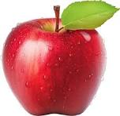

Apples are a type of fruit that is commonly found in many parts of the world. They are typically round and can come in a variety of colors, including red, green, and yellow. Apples are known for their sweet and crisp flavor, making them a popular choice for snacking and cooking. They are also rich in nutrients, including fiber, vitamin C, and antioxidants.

Mangoes are a type of fruit that is commonly found in many parts of the world. They are typically large and can come in a variety of colors, including green, yellow, and red. Mangoes are known for their sweet and juicy flavor, making them a popular choice for snacking and cooking. They are also rich in nutrients, including vitamin A, vitamin C, and fiber.
Bananas are a type of fruit that is commonly found in many parts of the world. They are typically long and can come in a variety of colors, including green, yellow, and brown. Bananas are known for their sweet and creamy flavor, making them a popular choice for snacking and cooking. They are also rich in nutrients, including potassium, vitamin B6, and fiber.